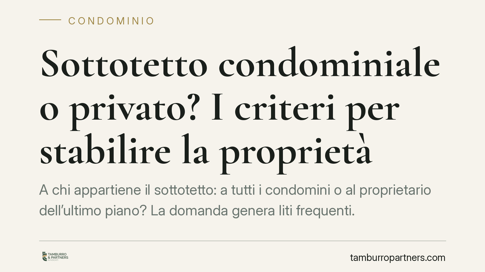

Sottotetto condominiale o privato? I criteri per stabilire la proprietà
A chi appartiene il sottotetto: a tutti i condomini o al proprietario dell'ultimo piano? La domanda genera liti frequenti. La Cassazione, con l'ordinanza 4410/2026, ribadisce che la risposta non è automatica: dipende dai titoli d'acquisto e, in loro assenza, dalla funzione concreta dello spazio. Vediamo i criteri da applicare prima di contendersi un vano.

Il punto di partenza: non esiste una regola automatica
Si tende a dare per scontato che il sottotetto appartenga a chi abita sotto, cioè al proprietario dell'ultimo piano. Non è così. Il sottotetto non rientra tra i beni elencati come comuni dall'art. 1117 del codice civile, ma non è nemmeno automaticamente di proprietà esclusiva.
Per stabilire a chi appartiene occorre seguire un ordine preciso di verifica. La Corte di Cassazione, con l'ordinanza n. 4410/2026, ha confermato l'orientamento consolidato: prima si guardano i titoli d'acquisto, poi — solo se questi tacciono — si valuta la funzione concreta dello spazio.
Inquadramento normativo
L'art. 1117 cod. civ. individua le parti comuni dell'edificio "se non risulta il contrario dal titolo". Questa clausola è decisiva: il titolo d'acquisto (l'atto notarile, il regolamento contrattuale, la planimetria allegata) prevale su qualsiasi presunzione.
Quando il titolo nulla dice sul sottotetto, interviene il criterio funzionale elaborato dalla giurisprudenza. Il sottotetto è:
- condominiale quando ha funzione di isolamento e protezione termica dell'ultimo appartamento rispetto al tetto, comportandosi come una camera d'aria al servizio dell'intero edificio;
- privato dell'ultimo piano quando, per dimensioni e caratteristiche, è oggettivamente utilizzabile come vano autonomo (ad esempio un ambiente abitabile o un deposito), configurandosi come pertinenza dell'alloggio sottostante.
Gli indici concreti che contano
La Cassazione valorizza alcuni elementi di fatto, da considerare insieme e non isolatamente:
Altezza e volumetria. Un vano basso, praticabile solo a fatica e privo di reale utilizzabilità, depone per la natura condominiale (isolamento). Uno spazio con altezza sufficiente a essere vissuto o usato come magazzino depone per la pertinenza privata.
Accesso. Se al sottotetto si accede esclusivamente dall'appartamento dell'ultimo piano, l'indizio punta verso la proprietà esclusiva. Un accesso dalle scale comuni o da parti condominiali rafforza invece la natura comune.
Funzione concreta. Conta l'uso oggettivamente possibile dello spazio, non quello che di fatto ne fa un singolo condomino. L'utilizzo esclusivo e prolungato da parte dell'ultimo piano non trasforma, da solo, un bene comune in bene privato: serve l'usucapione, con i suoi rigorosi presupposti.
Implicazioni pratiche
Per il proprietario dell'ultimo piano, qualificare il sottotetto come privato significa poterlo recuperare, ristrutturare o, dove la normativa urbanistica lo consente, trasformare in superficie abitabile. Ma attenzione: l'uso prolungato non basta a dimostrare la proprietà in caso di contestazione.
Per gli altri condomini, un sottotetto comune concorre a formare le parti condominiali e incide sulle decisioni assembleari che lo riguardano (manutenzione del tetto, interventi di isolamento, eventuali concessioni d'uso).
Per l'amministratore, la qualificazione del sottotetto rileva nella gestione delle spese e nell'eventuale opposizione a interventi che un singolo volesse realizzare su uno spazio che potrebbe essere comune.
Il nodo tipico è proprio questo: un condomino inizia lavori sul sottotetto ritenendolo proprio, l'assemblea contesta la natura comune. Il contenzioso che ne deriva ruota quasi sempre attorno all'interpretazione dei titoli e alla ricostruzione degli indici di fatto.
Cosa fare in concreto
- Recuperate il titolo d'acquisto e verificate se menziona espressamente il sottotetto: planimetrie, atti notarili e regolamento condominiale contrattuale vanno letti con attenzione, perché prevalgono su ogni presunzione.
- Misurate altezza e caratteristiche del vano prima di qualsiasi intervento: la concreta utilizzabilità è uno degli elementi decisivi.
- Verificate l'accesso: documentate se il sottotetto è raggiungibile solo dall'appartamento o anche da parti comuni.
- Non avviate lavori su un sottotetto dalla natura incerta senza aver chiarito la proprietà: un intervento su bene comune espone a richieste di ripristino e risarcimento.
- Richiedete una verifica documentale prima di promuovere o contrastare un'azione: la valutazione congiunta di titoli e indici di fatto orienta le probabilità di esito.
Disclaimer
Contributo informativo a cura di Tamburro & Partners - Avv. Giuseppe Tamburro. Non costituisce parere legale.
Ogni condominio ha una storia a sé.
Se gestisci un'amministrazione e vuoi un confronto su una specifica questione condominiale, scrivi allo studio. Ti rispondiamo entro un giorno lavorativo.